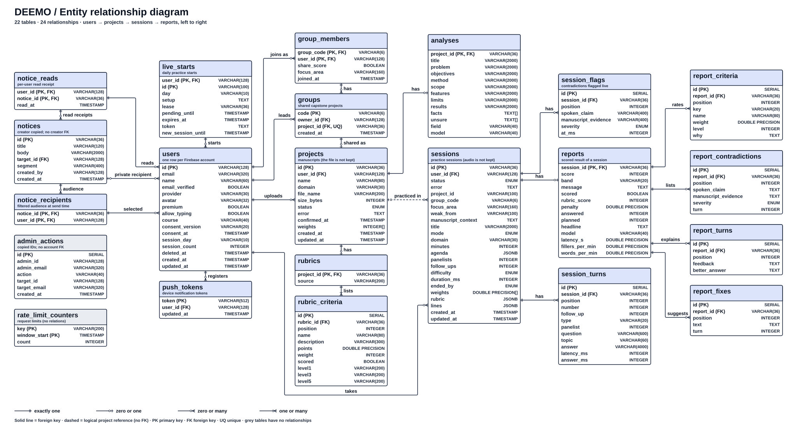

All 22 tables and 24 direct relationships in one diagram. No reference chips, line crossings or shared line segments. The two support tables have no database relationships.
Open vector SVG to zoom · Open high-resolution PNG
